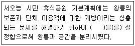
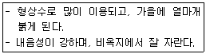
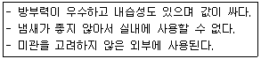
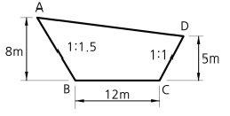

조경기능사 (2013-04-14 기출문제)
1과목: 조경일반
1. 그리스 시대 공공건물과 주랑으로 둘러싸인 다목적 열린 공간으로 무덤의 전실을 가리키기도 했던 곳은?
- 포름
- 빌라
- 테라스
- 커넬
(정답률: 79%)

2. 다음 중 본격적인 프랑스식 정원으로서 루이 14세 당시의 니콜라스 푸케와 관련 있는 정원은?
- 보르뷔콩트(Vaux-le-Vicomte)
- 베르사유(Versailles)궁원
- 퐁텐블로(Fontainebleau)
- 생-클루(Saint-Cloud)
(정답률: 72%)
3. 오방색 중 오행으로는 목(.)에 해당하며 동방(東)의 색으로 양기가 가장 강한 곳이다. 계절로는 만물이 생성하는 봄의 색이고 오륜은 인(仁)을 암시하는 색은?
- 적(赤)
- 청(靑)
- 황(黃)
- 백(白)
(정답률: 81%)
4. 다음 중 정원에서의 눈가림 수법에 대한 설명으로 틀린 것은?
- 좁은 정원에서는 눈가림 수법을 쓰지 않는 것이 정원을 더 넓어 보이게 한다.
- 눈가림은 변화와 거리감을 강조하는 수법이다.
- 이 수법은 원래 동양적인 것이다.
- 정원이 한층 더 깊이가 있어 보이게 하는 수법이다.
(정답률: 72%)
5. 빠른 보행을 필요로 하는 곳에 포장재료로 사용되기 가장 부적합한 것은?
- 아스팔트
- 콘크리트
- 조약돌
- 소형고압블록
(정답률: 94%)
6. 작은 색견본을 보고 색을 선택한 다음 아파트 외벽에 칠했더니 명도와 채도가 높아져 보였다. 이러한 현상을 무엇이라고 하는가?
- 색상대비
- 한난대비
- 면적대비
- 보색대비
(정답률: 89%)
7. 도시공원 및 녹지 등에 관한 법률 시행규칙상 도시의 소공원 공원시설 부지면적 기준은?
- 100분의 20이하
- 100분의 30이하
- 100분의 40이하
- 100분의 60이하
(정답률: 58%)
8. 조경식재 설계도를 작성할 때 수목명, 규격, 본수 등을 기입하기 위한 인출선 사용의 유의사항으로 올바르지 않는 것은?
- 가는 선으로 명료하게 긋는다.
- 인출선의 수평부분은 기입 사항의 길이와 맞춘다.
- 인출선간의 교차나 치수선의 교차를 피한다.
- 인출선의 방향과 기울기는 자유롭게 표기하는 것이 좋다.
(정답률: 85%)
9. ‘사자(死者)의 정원’이라는 이름의 묘지정원을 조성한 고대 정원은?
- 그리스 정원
- 바빌로니아 정원
- 페르시아 정원
- 이집트 정원
(정답률: 77%)
10. 미적인 형 그 자체로는 균형을 이루지 못하지만 시각적인 힘의 통합에 의해 균형을 이룬 것처럼 느끼게 하여 동적인 감각과 변화있는 개성적 감정을 불러 일으키며, 세련미와 성숙미 그리고 운동감과 유연성을 주는 미적 원리는?
- 비례
- 비대칭
- 집중
- 대비
(정답률: 60%)
11. 다음 중 “피서산장, 이화원, 원명원”은 중국의 어느 시대 정원인가?
- 진딧물
- 명
- 청
- 당
(정답률: 80%)
12. 다음 중 온도감이 따뜻하게 느껴지는 색은?
- 보라색
- 초록색
- 주황색
- 남색
(정답률: 88%)
13. 다음 보기에서 ( )안에 들어갈 적당한 공간 표현은?

- 진입광장
- 동적공간
- 완충녹지
- 휴게공간
(정답률: 81%)
14. 다음 중 물체가 있는 것으로 가상되는 부분을 표시하는 선의 종류는?
- 실선
- 파선
- 1점쇄선
- 2점쇄선
(정답률: 50%)
15. 다음 중 창덕궁 후원 내 옥류천 일원에 위치하고 있는 궁궐내 유일의 초정은?
- 애련정
- 부용정
- 관람정
- 청의정
(정답률: 62%)
2과목: 조경재료
16. 비금속재료의 특성에 관한 설명 중 옳지 않은 것은?
- 납은 비중이 크고 연질이며 전성, 연성이 풍부하다.
- 알루미늄은 비중이 비교적 작고 연질이며 강도도 낮다.
- 아연은 산 및 알칼리에 강하나 공기 중 및 수중에서는 내식성이 작다.
- 동은 상온의 건조공기 중에서 변화하지 않으나 습기가 있으면 광택을 소실하고 녹청색으로 된다.
(정답률: 65%)
17. 다음 석재 중 조직이 균질하고 내구성 및 강도가 큰 편이며, 외관이 아름다운 장점이 있는 반면 내화성이 작아 고열을 받는 곳에는 적합하지 않은 것은?
- 응회암
- 화강암
- 편마암
- 안산암
(정답률: 84%)
18. 합성수지 중에서 파이프, 튜브, 물받이통 등의 제품에 가장 많이 사용되는 열가소성수지는?
- 페놀수지
- 멜라민수지
- 염화비닐수지
- 폴리에스테르수지
(정답률: 66%)
19. 목구조의 보강철물로서 사용되지 않는 것은?
- 나사못
- 듀벨
- 고장력볼트
- 꺽쇠
(정답률: 52%)
20. 정원의 한 구석에 녹음용수로 쓰기 위해서 단독으로 식재하려 할 때 적합한 수종은?
- 홍단풍
- 박태기나무
- 꽝꽝나무
- 칠엽수
(정답률: 67%)
21. 강을 적당한 온도(800~1000℃)로 가열하여 소정의 시간까지 유지한 후에 로(爐) 내부에서 천천히 냉각시키는 열처리법은?
- 풀림(annealing)
- 불림(normalizing)
- 뜨임질(tempering)
- 담금질(quenching)
(정답률: 62%)
22. 흙에 시멘트와 다목적 토양개량제를 섞어 기층과 표층을 겸하는 간이포장 재료는?
- 우레탄
- 콘크리트
- 카프
- 칼라 세라믹
(정답률: 67%)
23. 다음 중 난대림의 대표 수종인 것은?
- 녹나무
- 주목
- 전나무
- 분비나무
(정답률: 61%)
24. 투명도가 높으므로 유기유리라는 명칭이 있으며, 착색이 자유롭고 내충격 강도가 크고, 평판, 골판 등의 각종 형태의 성형품으로 만들어 채광판, 도어판, 칸막이벽 등에 쓰이는 합성수지는?
- 요소수지
- 아크릴수지
- 에폭시수지
- 폴리스티렌수지
(정답률: 88%)
25. 다음 재료 중 기건상태에서 열전도율이 가장 작은 것은?
- 유리
- 석고보드
- 콘크리트
- 알루미늄은 비중이 비교적 작고 연질이며 강도도 낮다.
(정답률: 69%)
26. 재료의 역학적 성질 중 '탄성'에 관한 설명으로 옳은 것은?
- 재료가 작은 변형에도 쉽게 파괴되는 성질
- 물체에 외력을 가한 후 외력을 제거시켰을 때 영구변형이 남는 성질
- 물체에 외력을 가한 후 외력을 제거하면 원래의 모양과 크기로 돌아가는 성질
- 재료가 하중을 받아 파괴될 때까지 높은 응력에 견디며 큰 변형을 나타내는 성질
(정답률: 87%)
27. 다음 중 보기와 같은 특성을 지닌 정원수는?

- 주목
- 쥐똥나무
- 화살나무
- 산수유
(정답률: 87%)
28. 수확한 목재를 주로 가해하는 대표적 해충은?
- 흰개미
- 매미
- 풍뎅이
- 흰불나방
(정답률: 90%)
29. 물의 이용 방법 중 동적인 것은?
- 연못
- 캐스케이드
- 호수
- 풀림(annealing)
(정답률: 80%)
30. 양질의 포졸란(pozzolan)을 사용한 콘크리트의 성질로 옳지 않은 것은?
- 수밀성이 크고 발열량이 적다.
- 화학적 저항성이 크다.
- 워커빌리티 및 피니셔빌리티가 좋다.
- 강도의 증진이 빠르고 단기강도가 크다.
(정답률: 52%)
31. 다음 보기의 목재 방부법에 사용되는 방부제는?

- 광명단
- 물유리
- 크레오소트
- 황암모니아
(정답률: 78%)
32. 여름에 꽃피는 알뿌리 화초인 것은?
- 히아신스
- 글라디올러스
- 수선화
- 백합
(정답률: 55%)
33. 토양 수분과 조경 수목과의 관계 중 습지를 좋아하는 수종은?
- 주엽나무
- 소나무
- 신갈나무
- 노간주나무
(정답률: 54%)
34. 나무 줄기의 색채가 흰색계열이 아닌 수종은?
- 분비나무
- 서어나무
- 자작나무
- 모과나무
(정답률: 69%)
35. 암석 재료의 가공 방법 중 쇠망치로 석재 표면의 큰 돌출 부분만 대강 떼어내는 정도의 거친 면을 마무리하는 작업을 무엇이라 하는가?
- 잔다듬
- 물갈기
- 혹두기
- 도드락다듬
(정답률: 85%)
3과목: 조경 시공 및 관리
36. 콘크리트를 친 후 응결과 경화가 완전히 이루어지도록 보호하는 것을 가리키는 용어는?
- 타설
- 파종
- 다지기
- 양생
(정답률: 91%)
37. 다음 복합비료 중 주성분 함량이 가장 많은 비료는?
- 0-40-10
- 11-21-11
- 21-21-17
- 18-18-18
(정답률: 86%)
38. 표준품셈에서 포함된 것으로 규정된 소운반 거리는 몇[m] 이내를 말하는가?
- 10[m]
- 20[m]
- 30[m]
- 40[m]
(정답률: 69%)
39. 암거는 지하수위가 높은 곳, 배수 불량 지반에 설치한다. 암거의 종류 중 중앙에 큰 암거를 설치하고 좌우에 작은 암거를 연결시키는 형태로 넓이에 관계없이 경기장이나 어린이놀이터와 같은 소규모의 평탄한 지역에 설치할 수 있는 것은?
- 어골형
- 빗살형
- 부채살형
- 자연형
(정답률: 84%)
40. 눈이 트기 전 가지의 여러 곳에 자리 잡은 눈 가운데 필요로 하지 않은 눈을 따버리는 작업을 무엇이라 하는가?
- 순자르기
- 열매따기
- 눈따기
- 가지치기
(정답률: 85%)
41. 다음 그림과 같은 땅깎기 공사 단면의 절토 면적은?

- 64
- 80
- 102
- 128
(정답률: 50%)
42. 심근성 수목을 굴취할 때 뿌리분의 형태는?
- 접시분
- 사각평분
- 보통분
- 조개분
(정답률: 81%)
43. 수목에 영양공급 시 그 효과가 가장 빨리 나타나는 것은?
- 토양천공시비
- 수간주사
- 엽면시비
- 유기물시비
(정답률: 59%)
44. 다음 토양층위 중 집적층에 해당되는 것은?
- A층
- B층
- C층
- O층
(정답률: 57%)
45. 이른 봄 늦게 오는 서리로 인한 수목의 피해를 나타내는 것은?
- 조상(早霜)
- 만상(晩霜)
- 동상(凍傷)
- 한상(寒傷)
(정답률: 69%)
46. 벽면에 벽돌 길이만 나타나게 쌓는 방법은?
- 길이 쌓기
- 마구리 쌓기
- 옆세워 쌓기
- 네덜란드식 쌓기
(정답률: 82%)
47. 수목의 가슴 높이 지름을 나타내는 기호는?
- F
- S, D
- B
- W
(정답률: 83%)
48. 다음 수목의 외과 수술용 재료 중 동공 충전물의 재료로 가장 부적합한 것은?
- 콜타르
- 에폭시수지
- 불포화 폴리에스테르 수지
- 우레탄 고무
(정답률: 69%)
49. 솔잎혹파리에 대한 설명 중 틀린 것은?
- 1년에 1회 발생한다.
- 유충으로 땅속에서 월동한다.
- 우리나라에서는 1929년에 처음 발견되었다.
- 유충은 솔잎을 일부에서부터 갉아 먹는다.
(정답률: 54%)
50. 토양의 물리성과 화학성을 개선하기 위한 유기질 토양 개량재는 어떤 것인가?
- 펄라이트
- 버미큘라이트
- 피트모스
- 제올라이트
(정답률: 57%)
51. 정원석을 쌓을 면적이 60㎡, 정원석의 평균 뒷길이 50㎝, 공극률이 40%라고 할 때 실제적인 자연석의 체적은 얼마인가?
- 12㎥
- 16㎥
- 18㎥
- 20㎥
(정답률: 51%)
52. 토양의 3상이 아닌 것은?
- 고상
- 기상
- 액상
- 임상
(정답률: 72%)
53. 벽돌 수량 산출방법 중 면적 산출시 표준형 벽돌로 시공시 1㎡를 0.5B의 두께로 쌓으면 소요되는 벽돌량은?
- 65매
- 130매
- 75매
- 149매
(정답률: 74%)
54. 콘크리트 슬럼프값 측정 순서로 옳은 것은?
- 시료 채취 → 다지기 → 콘에 채우기 → 상단 고르기 → 콘 벗기기 → 슬럼프값 측정
- 시료 채취 → 콘에 채우기 → 콘 벗기기 → 상단 고르기 → 다지기 → 슬럼프값 측정
- 시료 채취 → 콘에 채우기 → 다지기 → 상단 고르기 → 콘 벗기기 → 슬럼프값 측정
- 다지기 → 시료 채취 → 콘에 채우기 → 상단 고르기 → 콘 벗기기 → 슬럼프값 측정
(정답률: 75%)
55. 다음 중 주요 기능의 관점에서 옥외 레크레이션의 관리 체계와 가장 거리가 먼 것은?
- 이용자관리
- 자원관리
- 공정관리
- 서비스관리
(정답률: 64%)
56. 잔디밭에서 많이 발생하는 잡초인 클로버(토끼풀)를 제초하는데 가장 효율적인 것은?
- 베노밀 수화제
- 캡탄 수화제
- 디코폴 수화제
- 디캄바 수화제
(정답률: 59%)
57. 농약 살포작업을 위해 물 100L를 가지고 1000배액을 만들 경우 얼마의 약량이 필요한가?
- 50㎖
- 100㎖
- 150㎖
- 200㎖
(정답률: 86%)
58. 다음 중 계곡선에 대한 설명 중 맞는 것은?
- 주곡선 간격의 1/2 거리의 가는 파선으로 그어진 것이다.
- 주곡선의 다섯 줄마다 굵은 선으로 그어진 것이다.
- 간곡선 간격의 1/2 거리의 가는 점선으로 그어진 것이다.
- 1/5000의 지형도 축척에서 등고선은 10m 간격으로 나타난다.
(정답률: 70%)
59. 생울타리처럼 수목이 대상으로 군식되었을 때 거름 주는 방법으로 가장 적당한 것은?
- 전면거름주기
- 천공거름주기
- 선상거름주기
- 방사상거름주기
(정답률: 76%)
60. 임해매립지 식재지반에서의 조경 시공시 고려하여야 할 사항으로 가장 거리가 먼 것은?
- 지하수위조정
- 염분제거
- 발생가스 및 악취제거
- 배수관부설
(정답률: 69%)